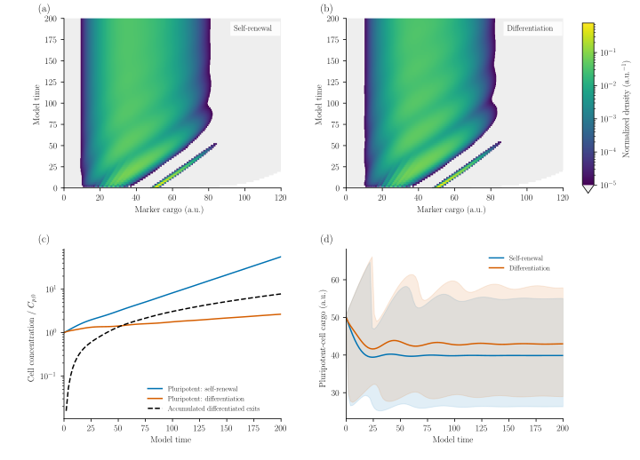
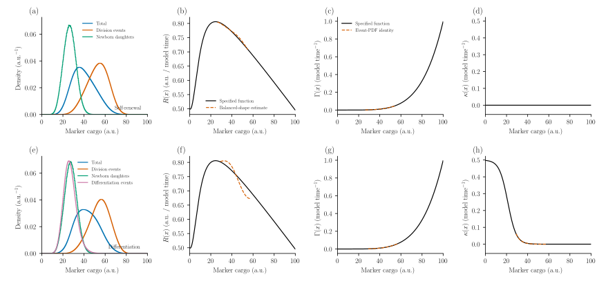

Stem-cell self-renewal and differentiation
A stem cell can make more of a pluripotency marker, divide and partition that marker between its daughters, or leave the pluripotent population. These events change both the number of cells and the distribution of marker content. A population balance connects the single-cell rates to the evolving culture.
This example uses the synthetic OCT4-cargo model in Figure 1A–B of Brown, Stoukides and Tzanakakis (2025). We prescribe their functions and compare self-renewal with differentiation. Cargo is in arbitrary units (a.u.) and time is model time; these synthetic axes do not specify hours or measured molecule counts. There are no experimental observations, fitted parameters or claims of experimental validation here.
From single cells to a population
Let $F(x,t)$ denote pluripotent-cell concentration per unit marker cargo, $C_p(t)=\int F(x,t)\,dx$ its total concentration, and $n_T(x,t)=F(x,t)/C_p(t)$ its normalized number density. The balance is
\[\frac{\partial F(x,t)}{\partial t} +\frac{\partial [R(x)F(x,t)]}{\partial x} =-[\Gamma(x)+\kappa(x)]F(x,t) +2\int_x^{x_{\max}}\Gamma(y)F(y,t)P(x\mid y)\,dy.\]
The prescribed functions are
\[R(x)=\frac{50+x^2}{100+x^2}-0.005x,\qquad \Gamma(x)=\left(\frac{x}{100}\right)^5,\qquad \kappa(x)=\frac{0.5}{1+0.005\exp(0.25x)}.\]
$R$ is net intracellular production minus degradation, in a.u. per model time. The hazards $\Gamma$ and $\kappa$ have inverse-time units. Division removes one mother and creates two daughters. Differentiation removes a cell from this cohort; it does not mean cell death. For self-renewal, set $\kappa=0$. We use $\kappa$ in place of the paper's $D$ to avoid confusing differentiation with diffusion.
For a mother with cargo $y$, draw $r\sim\operatorname{Beta}(40,40)$ and give its daughters cargo $ry$ and $(1-r)y$. Thus
\[P(x\mid y)=\frac{1}{y}\,\operatorname{BetaPDF}(x/y;40,40),\quad 0<x<y, \qquad \int_0^y P(x\mid y)\,dx=1.\]
The factor two in the birth integral counts both daughters. Division conserves cargo $x$, rather than a particle-volume coordinate $x^3$.
Initially, $C_p(0)=1$ and the cargo follows a normal distribution with mean 50 and standard deviation 0.5, truncated to $[0,100]$. Concentrations below are relative to this initial culture. The calculation uses exact initial bin probabilities and a closed cargo domain $[0,120]$. The upper boundary is checked to remain inactive. The numerical domain extends beyond the initial support to accommodate marker production.
Define and solve the model
The same terms used for particle populations describe cell cargo. Growth advects cargo, Breakage describes binary division, and Death implements the mathematical removal $-\kappa F$. Naming that term differentiation makes its biological meaning explicit:
using PopulationBalanceModels
include("examples/stem_cell_population.jl")
using .StemCellPopulation
grid = Grid1D(range(0.0, 120.0; length=601); coordinate=:oct4)
model = PBMModel(
expression=Growth(cargo_rate),
division=Breakage(division_rate, beta_daughters(order=12);
overflow=:discard,
coordinate_map=AdditiveCoordinate(identity, identity)),
differentiation=Death(differentiation_rate),
)
operator = compile(model, grid;
methods=TermMethods(growth=MUSCL()), bc=SizeBC())beta_daughters constructs a positive Gauss–Jacobi rule for the beta marginal. Its expected daughter counts sum to two and its first cargo moment is one. The native fixed-pivot method deposits these daughters while preserving their number and additive cargo when they lie between represented pivots. Daughters below the first pivot are explicitly discarded into a cumulative loss ledger; they are never silently assigned to the smallest cell. Their tiny contribution is reported separately from biological differentiation.
To retain exit counts and cargo, the example wraps the operator in PBMSystem. Its coupled scalar balances are
\[\frac{dC_{\mathrm{exit}}}{dt}=\sum_i\kappa(x_i)N_i,\qquad \frac{dQ_{\mathrm{exit}}}{dt}=\sum_i x_i\kappa(x_i)N_i,\qquad \frac{dE_{\mathrm{div}}}{dt}=\sum_i\Gamma(x_i)N_i.\]
Here $N_i$ is a bin-integrated cell concentration. These equations use the current integration stage, alongside the population derivative. The first two counters retain concentration and cargo at exit. They do not evolve a second differentiated-cell distribution or prescribe its subsequent division or expression. This choice also respects the current restriction that inter-population transfers cannot be combined with cumulative size-loss ledgers.
ConservativeExchange, restricted to mechanisms=(:growth,), records the discrete cargo produced by expression. Its bookkeeping scalar is a signed diagnostic counter, not an extracellular nutrient reservoir. Two independent balances then check every trajectory:
\[C_p+C_{\mathrm{exit}}+C_{\mathrm{lost}}=C_p(0)+E_{\mathrm{div}},\]
\[Q_p+Q_{\mathrm{exit}}+Q_{\mathrm{lost}}=Q_p(0)+Q_{\mathrm{produced}}.\]
Number is not conserved during division. Total cargo changes through expression and degradation, while binary partition itself conserves it. The coupling guide explains the reusable exchange and cumulative-accounting interfaces.
A complete minimal run, including those balances, is:
include("examples/stem_cell_population.jl")
using .StemCellPopulation
self = solve_case(bins=600, tf=200.0, differentiation=false)
diff = solve_case(bins=600, tf=200.0, differentiation=true)
last_self = state_summary(self.problem, last(self.u), last(self.t))
last_diff = state_summary(diff.problem, last(diff.u), last(diff.t))
@show last_self.stem last_diff.stem last_diff.differentiated
@show last_self.cargo_balance last_diff.cargo_balanceThe native solver uses MUSCL cargo transport, fixed-pivot division and SSPRK33(). The step is the smaller of 0.05 and suggest_dt(...; cfl=0.35), which combines transport and removal restrictions. Rates depend only on cargo, so this bound remains fixed throughout the run. Stage checks are enabled with zero negative tolerance; no cells are clipped or inserted. The limited transport and fixed-pivot deposition introduce spatial error even though the time update is third order for a smooth fixed-grid residual.
How the culture changes

The top panels show $n_T$, so each saved horizontal slice integrates to one; their colors do not represent total cell concentration. Both panels use the same logarithmic color scale. True zero density is white; positive density below $10^{-5}$ a.u.⁻¹ is light gray. The plot uses actual cargo-bin edges and saved-time strips, with no interpolation. Division initially creates a lower-cargo daughter population from the narrow starting cohort. Expression moves cells toward larger cargo; repeated division redistributes it downward.
The lower-left panel shows the independently evolving concentrations. The differentiated-exit curve is cumulative: it is not a prediction of how many differentiated cells survive subsequently. In the lower-right panel, shading spans the population's 10th–90th cargo quantiles, not a confidence interval. Differentiation preferentially removes low-cargo cells, altering the remaining distribution as well as its net expansion rate.
Division explains why mean cargo can initially fall even though $R$ is positive: it preserves cargo while increasing cell number. The sharp drop in the upper quantile is also meaningful. In self-renewal, the fraction above 50 a.u. falls from 12.0% at $t=22$ to 9.0% at $t=24$; the 90th percentile therefore switches from the high-cargo founding cohort to its descendants (64.65 to 47.20 a.u.). Connecting saved quantiles does not imply a discontinuity in the population's mean or its integrated cargo.
| At model time 200 | Self-renewal | Differentiation |
|---|---|---|
| Pluripotent concentration / initial concentration | 55.87 | 2.662 |
| Accumulated differentiated exits / initial concentration | 0 | 7.794 |
| Mean pluripotent-cell cargo (a.u.) | 39.88 | 42.98 |
| Instantaneous net expansion rate (model time⁻¹) | 0.01918 | 0.003990 |
Which cells are observed at an event?
A randomly sampled cell, a dividing mother and a newly born daughter have different cargo distributions. At a given time,
\[n_{\mathrm{div}}(x)=\frac{\Gamma(x)n_T(x)}{\mu},\qquad \mu=\int\Gamma(x)n_T(x)\,dx,\]
\[n_{\mathrm{diff}}(x)=\frac{\kappa(x)n_T(x)}{\bar\kappa},\qquad \bar\kappa=\int\kappa(x)n_T(x)\,dx.\]
The newborn density comes from the same native daughter-birth operator, normalized by $2\mu C_p$. Its integral is one minus the recorded unresolved daughter fraction. There is no differentiation-event density when $\bar\kappa=0$. These are event-conditioned snapshots, not independently evolving populations. The instantaneous net cohort expansion rate is $\lambda=\mu-\bar\kappa$ when boundary losses are negligible.

Rows show self-renewal and differentiation at $t=200$; the horizontal display is restricted to $[0,100]$ a.u. within the simulated $[0,120]$ domain. Dividing cells are weighted toward larger cargo, whereas differentiation events favor smaller cargo. The specified functions are black. Dashed curves reconstruct rates over the central 10th–90th percentile interval, leaving low-density tails out of the division by $n_T$.
The identities $\Gamma=\mu n_{\mathrm{div}}/n_T$ and, when differentiation occurs, $\kappa=\bar\kappa n_{\mathrm{diff}}/n_T$ recover the functions algebraically because the event distributions were generated by this model. This is a consistency check, not independent kinetic inference. Recovering $R$ from the CDF relation in Brown et al. additionally assumes a stationary normalized shape (balanced growth). The exports therefore include $\int|\partial n_T/\partial t|\,dx$ and the maximum cell-centred CDF rate. Residual transience and finite-volume quadrature can leave visible discrepancies in that reconstruction even when the forward calculation is accurate. There is no exact analytical transient PSD reference for this case.
At $t=200$, the central-interval $R$ reconstruction RMSE is 0.00334 for self-renewal and 0.02065 with differentiation, in a.u. per model time. The normalized-shape L1 rates are $6.20\times10^{-4}$ and $3.24\times10^{-3}$ per model time, respectively. Neither is exactly zero; the differentiation curve in particular should not be interpreted as a verified steady-state inversion. The $\Gamma$ and $\kappa$ identities agree to roundoff, as expected from their construction. In self-renewal, $\kappa=0$ is fixed: there is no differentiation-event PDF and no reconstructed curve in that panel. Its exported zero is the fixed model value.
Reproduce and check the calculation
From the repository root:
# Short forward check; separate temporary outputs, no final figures.
julia --project=. examples/stem_cell_population.jl --smoke
# Two full runs plus independent grid, time, quadrature and domain checks.
julia --project=. examples/stem_cell_population.jl
python docs/benchmarks/plot_stem_cells.py --usetex
python test/stem_cell_results.py
julia --project=. test/stem_cells.jl
julia --project=docs docs/make.jlPlotting requires Python 3.11+, NumPy, Matplotlib and, for --usetex, LaTeX with dvipng. Omitting that flag uses MathText previews. The plotter verifies the production configuration and numerical-source/data hashes; smoke exports cannot replace full-horizon results. Including the example module does not execute the benchmark. No experimental data or paper-figure workflow is involved.
The model and minimal solver, reporting driver and plotting script preserve the full workflow. The summary, refinement table and run manifest record the actual configurations, timings, dependency versions and source hashes. Timings are one measured solve after a separate compilation warmup, including setup and saved-state checks, but excluding export and plotting; they have no repeatability error bars.
The focused tests check beta daughter moments against their analytic values and a binary division/differentiation cascade against an independent closed-form solution. Production checks separately halve the timestep, refine 300/600/1200 cargo bins, double daughter quadrature from 12 to 24 nodes, and extend the domain at unchanged bin width. The largest CDF changes over the saved times are:
| Change from the displayed 600-bin calculation | Self-renewal | Differentiation |
|---|---|---|
| 1200 cargo bins | 0.0245 | 0.0278 |
| Halved timestep controls | 0.0000191 | 0.0000200 |
| 24 daughter-quadrature nodes | 0.00761 | 0.00727 |
| Domain extended from 120 to 160 a.u. | 0.0000167 | 0.0000175 |
These are absolute CDF fractions: 0.0278 is 2.78 percentage points. Distribution shape remains more grid-sensitive than concentration: the 600/1200-bin concentration differences stay below 0.013% and 0.070%, respectively. The plots illustrate the biology and accounting; they do not establish sub-percent convergence of the transient CDF. Domain extension also tightens the automatic step recommendation because the division hazard is larger at high cargo, so that row includes a temporal change comparable to the explicit timestep check.
All saved populations are nonnegative. The largest relative discrete cargo defect is $4.4\times10^{-13}$; daughter underflow is below $3\times10^{-44}$ of the initial cell concentration and the upper boundary remains inactive. These discrete balance checks are separate from continuum accuracy. The original authors use a stochastic representative ensemble; this deterministic sectional calculation is an adaptation of their synthetic model, rather than a reproduction of a particular random realization. The authors' code and the paper's supplement specify the source functions and initialization.